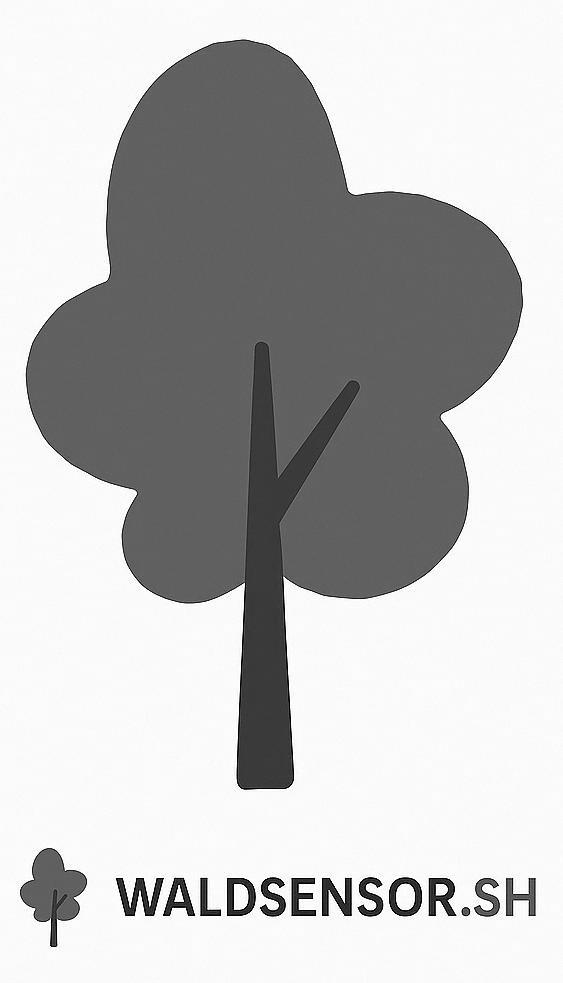

Citizen Science trifft auf digitale Wälder in Schleswig-Holstein.
Mit einfachen Umweltsensoren und LoRaWAN-Funk erfassen wir Daten aus Wald und Natur. Temperatur, Bodenfeuchte, Wind – offen, datensparsam und gemeinwohlorientiert.
Die Kosten für die Hardware betragen ca. 80 € - 130 €, je nach Ausbaustufe. Für 80 € bekommt man den Node + den Sensor für Temperatur und Luftfeuchtigkeit. Das reicht für den Anfang völlig aus.
WALDSENSOR.SH ist ein Projekt für alle, die sich für Natur, Klima und digitale Technik interessieren. Unsere Sensoren messen Temperatur, Feuchtigkeit, Bodenwerte und Wind – mitten im Wald. Die gesammelten Daten helfen dabei, Wälder besser zu verstehen, schützen und langfristig zu erhalten.
Du kannst auch mitmachen:
Eine Karte mit den aktiven Sensoren gibt es auch schon waldsensor.sh!
Die bereitgestellten Daten stehen unter der ODbL 1.0 – alternativ auch CC0.
Projekt bei GitHub: https://github.com/Loobster
Fragen oder Interesse? Schreib uns über das Formular:
Impressum